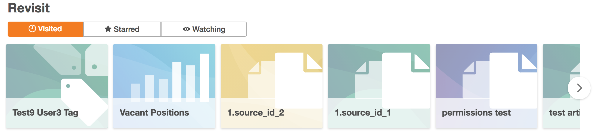
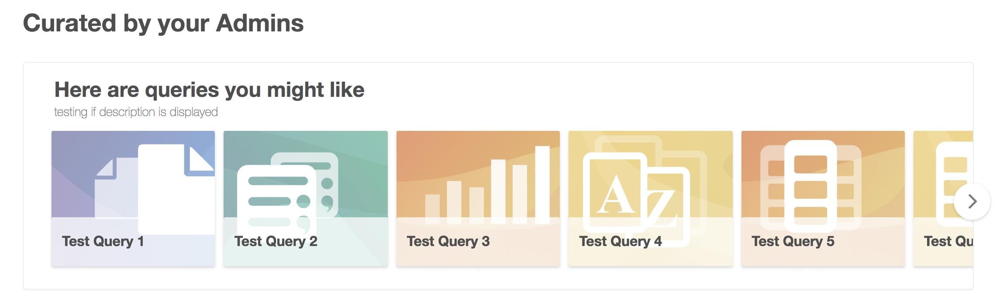
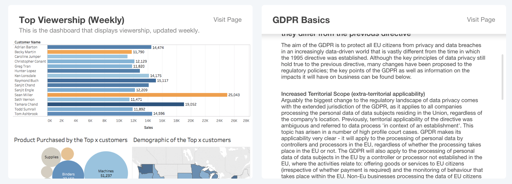
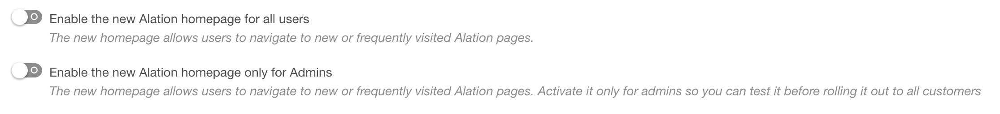
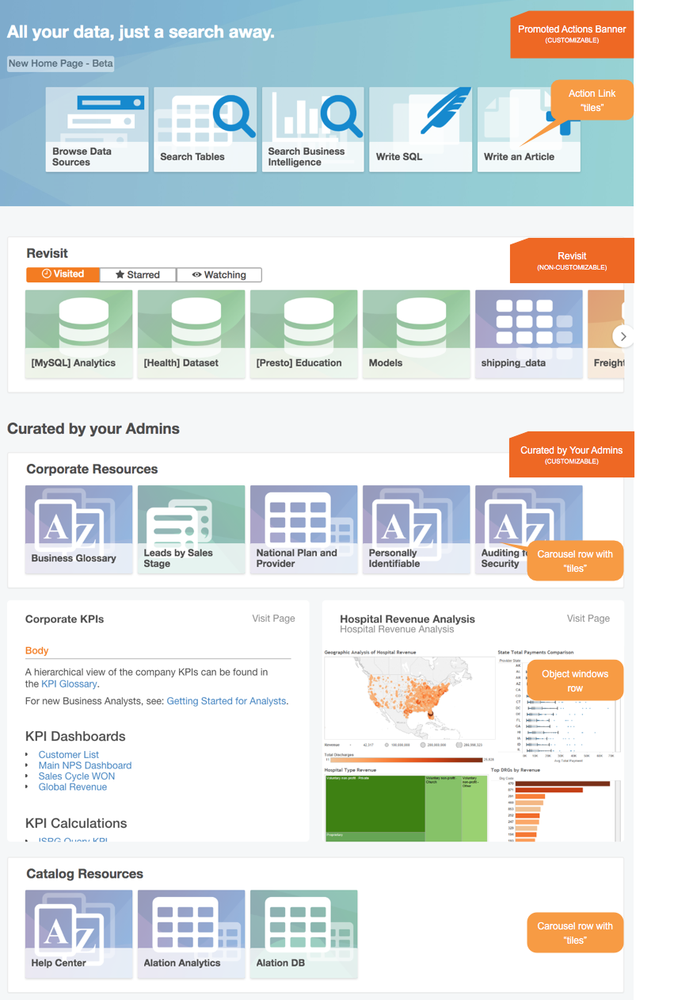

Customizable Homepage¶
Versions V R4 (5.8.x) - V R7 (5.12.x)¶
Starting with V R4 (5.8.x), Alation has introduced a new homepage. The old homepage only allowed minimal configuration, with two articles displayed prominently for Stewards and two different articles displayed for Analysts. Now, there is one homepage for all hats, but it allows to display many more articles and other Alation objects, both as tiles and as previews. The content on the homepage is based on the configuration file in the JSON format. If you want to update your homepage frequently, it may be worth having a scripted update mechanism.
This article gives a general overview of the three sections you can find on the Homepage in releases VR4 - VR7.
{kind=link}
Revisit¶
This section is personalized based on behavior: it lists catalog pages you have recently visited, “starred” or marked as “watched”. It features tabs:
Visited - displays recently visited catalog pages
Starred - displays starred pages
Watching - displays watched pages
The links to pages appear as clickable tiles . In Revisit, the tile content corresponds to the selected tab. For example, the Starred tab will display the pages you have starred.
You can hover over a tile to reveal the description of the target page. Click the tile to navigate there.
For details on starring and watching objects in Alation, refer to Classic User Experience.
Revisit:
{kind=link}
Curated by Your Admins
This section features content prepared by your Catalog Admins to be shared with all users. It can include one or more carousel and object window rows that have links to promoted resources. You can click any of the tile elements to navigate to the corresponding page.
Curated by Your Admins - a Tile Carousel:
{kind=link}
An object window provides a read-only preview of the linked object, that can be an article, a BI report, or a Tableau sheet. To navigate to the dedicated page, click Visit Page in the top right corner of an object window.
Curated by Your Admins - Object Windows:
{kind=link}
Permissions to View¶
Some pages in Alation may be restricted by permissions, such as, for example, private Articles or private Data Sources. This may impact the content that is visible to the specific user on the Homepage: users will not see previews or links to objects they do not have permission to view.
If a user does not have permission to view a specific object,
Tiles linked to this object will be hidden from carousels for this user. If all tiles in a carousel are hidden from a user, this carousel will not appear on their Homepage.
The object window will be hidden from Homepage if a user does not have permissions to view the linked object.
Enabling the Homepage¶
Customizable Homepage is not available by default and can be enabled by Server Admins in Labs. For more details, refer to Configure the Homepage.
Toggles for the Homepage in Labs:
{kind=link}
Customizing the Homepage¶
To maximize the value for your Alation users, the new Homepage can be customized in each instance of Alation.
For information on how to customize, see Customize the Homepage JSON.
Sample Homepage:
{kind=link}